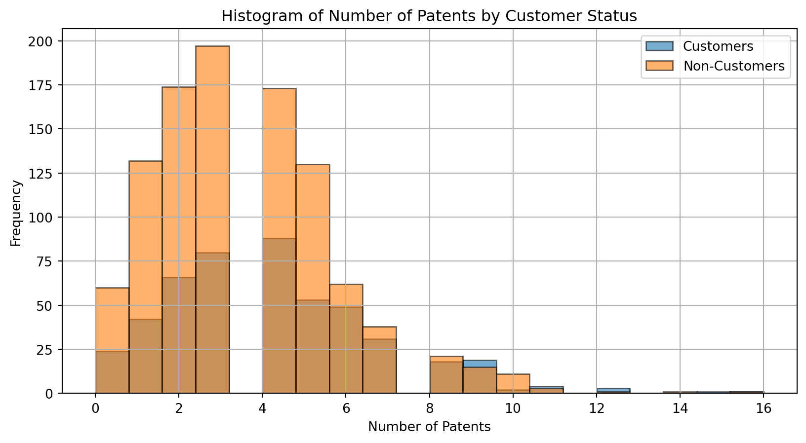
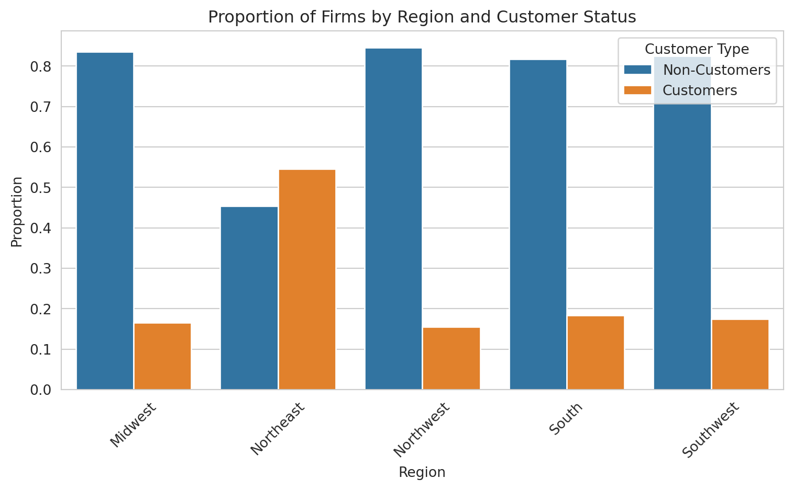
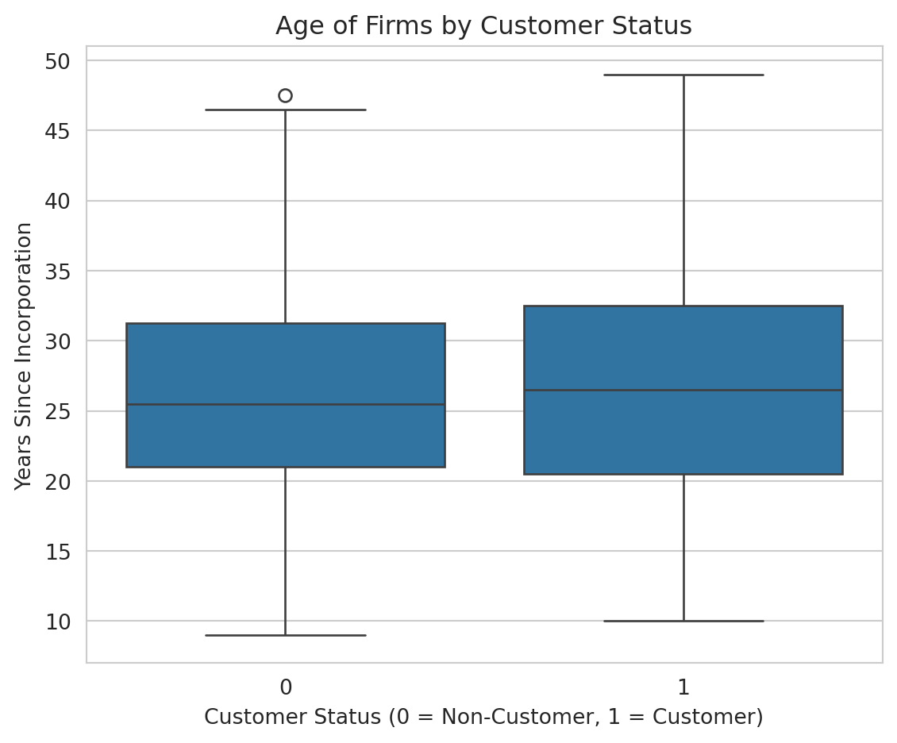
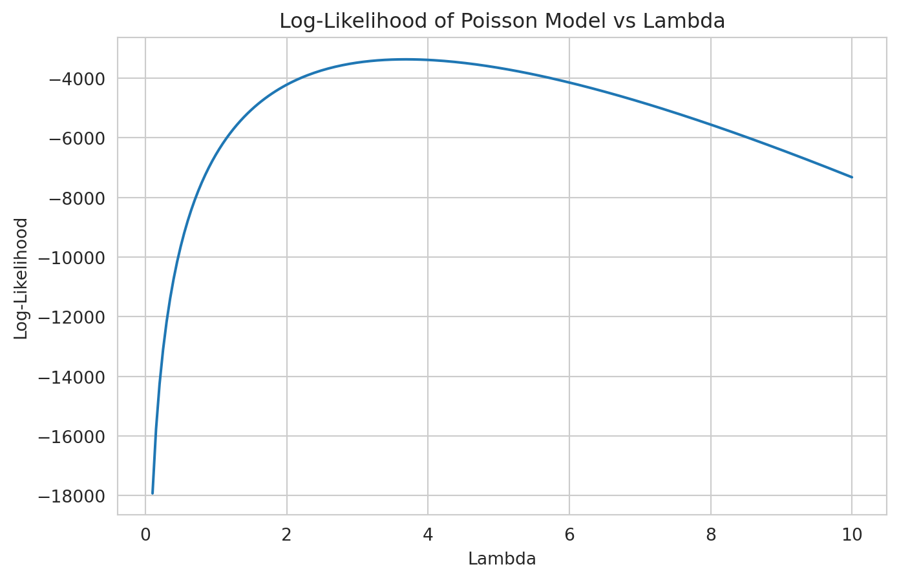

Blueprinty is a small firm that makes software for developing blueprints specifically for submitting patent applications to the US patent office. Their marketing team would like to make the claim that patent applicants using Blueprinty’s software are more successful in getting their patent applications approved. Ideal data to study such an effect might include the success rate of patent applications before using Blueprinty’s software and after using it. Unfortunately, such data is not available.
However, Blueprinty has collected data on 1,500 mature (non-startup) engineering firms. The data include each firm’s number of patents awarded over the last 5 years, regional location, age since incorporation, and whether or not the firm uses Blueprinty’s software. The marketing team would like to use this data to make the claim that firms using Blueprinty’s software are more successful in getting their patent applications approved.
Data
import pandas as pdimport matplotlib.pyplot as pltimport seaborn as snsblueprinty = pd.read_csv("/home/jovyan/Desktop/Marketing Analytics Website : HW's/blueprinty.csv")airbnb = pd.read_csv("/home/jovyan/Desktop/Marketing Analytics Website : HW's/airbnb.csv")blueprinty
patents
region
age
iscustomer
0
0
Midwest
32.5
0
1
3
Southwest
37.5
0
2
4
Northwest
27.0
1
3
3
Northeast
24.5
0
4
3
Southwest
37.0
0
...
...
...
...
...
1495
2
Northeast
18.5
1
1496
3
Southwest
22.5
0
1497
4
Southwest
17.0
0
1498
3
South
29.0
0
1499
1
South
39.0
0
1500 rows × 4 columns
Compare histograms and means of number of patents by customer status
Blueprinty customers are not selected at random. It may be important to account for systematic differences in the age and regional location of customers vs non-customers.
# Histogram of number of patents by customer status# Separate data by customer statuscustomers = blueprinty[blueprinty['iscustomer'] ==1]non_customers = blueprinty[blueprinty['iscustomer'] ==0]# Plot histograms of number of patentsplt.figure(figsize=(10, 5))plt.hist(customers['patents'], bins=20, alpha=0.6, label='Customers', edgecolor='black')plt.hist(non_customers['patents'], bins=20, alpha=0.6, label='Non-Customers', edgecolor='black')plt.xlabel('Number of Patents')plt.ylabel('Frequency')plt.title('Histogram of Number of Patents by Customer Status')plt.legend()plt.grid(True)plt.show()# Calculate and compare meansmean_customers = customers['patents'].mean()mean_non_customers = non_customers['patents'].mean()print(f'Customer Mean Number of Patents: {mean_customers}')print(f'Non-Customer Mean Number of Patents: {mean_non_customers}')

Customer Mean Number of Patents: 4.133056133056133
Non-Customer Mean Number of Patents: 3.4730127576054954
The histogram above compares the distribution of patent counts between firms that use Blueprinty software (iscustomer = 1) and those that do not (iscustomer = 0). A few key patterns emerge:
The distribution is right-skewed for both groups, with the bulk of firms holding between 0 and 6 patents.
Non-customers are more concentrated around lower patent counts, particularly at 2-4 patents.
Customers of Blueprinty show a relatively flatter distribution, with more firms holding moderate to higher numbers of patents.
The summary statistics support this visual trend:
Non-customers have 3.47 patents on average (n = 1,019)
Customers have 4.13 patents on average (n = 481)
Although this is a modest difference (approximately 0.66 more patents on average), it is consistent with the idea that Blueprinty customers may be more successful or more prolific in obtaining patents. However, it is also possible that other factor, such as firm age or region, may explain the difference, so further analysis is needed before drawing causal conclusions.
Compare regions and ages by customer status
Compare regions and ages by customer status
import seaborn as snsimport matplotlib.pyplot as pltsns.set_style("whitegrid")region_props = pd.crosstab(blueprinty['region'], blueprinty['iscustomer'], normalize='index').reset_index()region_props.columns = ['Region', 'Non-Customers', 'Customers']region_props = pd.melt(region_props, id_vars='Region', var_name='Customer Type', value_name='Proportion')plt.figure(figsize=(8, 5))sns.barplot(data=region_props, x='Region', y='Proportion', hue='Customer Type')plt.title('Proportion of Firms by Region and Customer Status')plt.ylabel('Proportion')plt.xlabel('Region')plt.legend(title='Customer Type')plt.xticks(rotation=45)plt.tight_layout()plt.show()

plt.figure(figsize=(6, 5))sns.boxplot(data=blueprinty, x='iscustomer', y='age')plt.title('Age of Firms by Customer Status')plt.xlabel('Customer Status (0 = Non-Customer, 1 = Customer)')plt.ylabel('Years Since Incorporation')plt.tight_layout()plt.show()

The region plot above shows notable variation in customer distribution across regions:
In most regions (Midwest, Northwest, South, Southwest), the majority of firms are non-customers, with Blueprinty customers making up only around 15–20% of firms.
The Northeast stands out as an exception, where nearly half of the firms are Blueprinty customers. This suggests that Blueprinty may have a stronger market presence or better adoption in that region.
The boxplot comparing firm age by customer status shows:
The median age of customers and non-customers is very similar, both around 25–27 years.
The spread of firm ages is also comparable, though customers appear to have a slightly higher upper range, with some firms approaching 50 years of age.
There’s no strong visual evidence of systematic age differences between customers and non-customers, but customers might skew slightly older on average.
Together, these plots suggest that while age may not be a major confounding factor, region could be, especially due to the Northeast’s unusual customer concentration. This is important to account for in any causal claims about Blueprinty’s effectiveness.
Estimation of Simple Poisson Model
Since our outcome variable of interest can only be small integer values per a set unit of time, we can use a Poisson density to model the number of patents awarded to each engineering firm over the last 5 years. We start by estimating a simple Poisson model via Maximum Likelihood.
Likelihood Function
For a Poisson model where \(Y_i \sim \text{Poisson}(\lambda)\), the probability mass function is:
import numpy as npy = blueprinty['patents'].values# Range of lambda values to testlambda_vals = np.linspace(0.1, 10, 200)log_liks = [poisson_log_likelihood(lmbda, y) for lmbda in lambda_vals]plt.figure(figsize=(8, 5))plt.plot(lambda_vals, log_liks)plt.title("Log-Likelihood of Poisson Model vs Lambda")plt.xlabel("Lambda")plt.ylabel("Log-Likelihood")plt.grid(True)plt.show()

Solving for MLE of Lambda (Analytical Derivation)
To find the MLE of \(\lambda\), we take the log-likelihood:
Thus, the maximum likelihood estimate of \(\lambda\) is simply the sample mean of \(Y\), which makes intuitive sense: the Poisson distribution models counts with mean \(\lambda\), so the best estimate of \(\lambda\) is just the average count in the data.
todo: Find the MLE by optimizing your likelihood function with optim() in R or sp.optimize() in Python.
Find MLE of Lambda via Optimization
from scipy.optimize import minimize_scalarfrom scipy.special import gammalnimport numpy as np# Define negative log-likelihood for minimizationdef neg_poisson_log_likelihood(lmbda, y):if lmbda <=0:return np.infreturn-np.sum(-lmbda + y * np.log(lmbda) - gammaln(y +1))y = blueprinty['patents'].values# Optimize (minimize the negative log-likelihood)result = minimize_scalar(neg_poisson_log_likelihood, bounds=(0.1, 10), args=(y,), method='bounded')lambda_mle = result.xlambda_mle
3.684666226134359
Estimation of Poisson Regression Model
Next, we extend our simple Poisson model to a Poisson Regression Model such that \(Y_i = \text{Poisson}(\lambda_i)\) where \(\lambda_i = \exp(X_i'\beta)\). The interpretation is that the success rate of patent awards is not constant across all firms (\(\lambda\)) but rather is a function of firm characteristics \(X_i\). Specifically, we will use the covariates age, age squared, region, and whether the firm is a customer of Blueprinty.
Poisson Regression Log-Likelihood Function
import numpy as npfrom scipy.special import gammaln# Log-likelihood for Poisson regressiondef poisson_regression_log_likelihood(beta, X, y): beta = np.asarray(beta) X = np.asarray(X) y = np.asarray(y)# Linear predictor and lambda_i = exp(X @ beta) eta = X @ beta lam = np.exp(eta)# Log-likelihood log_lik = np.sum(-lam + y * eta - gammaln(y +1))return-log_lik
todo: Use your function along with R’s optim() or Python’s sp.optimize() to find the MLE vector and the Hessian of the Poisson model with covariates. Specifically, the first column of X should be all 1’s to enable a constant term in the model, and the subsequent columns should be age, age squared, binary variables for all but one of the regions, and the binary customer variable. Use the Hessian to find standard errors of the beta parameter estimates and present a table of coefficients and standard errors.
Build Design Matrix for Poisson Regression
import pandas as pdimport numpy as np# Create design matrix Xblueprinty['age_squared'] = blueprinty['age']**2# Get region dummies, dropping one (e.g., alphabetically first)region_dummies = pd.get_dummies(blueprinty['region'], drop_first=True)# Combine all predictorsX = pd.concat([ pd.Series(1, index=blueprinty.index, name='intercept'), blueprinty[['age', 'age_squared', 'iscustomer']], region_dummies], axis=1)y = blueprinty['patents'].valuesX_matrix = X.values
Estimate Beta via Maximum Likelihood (Fixed)
from scipy.optimize import minimizefrom scipy.special import gammalnimport numpy as np# Ensure X and y are numeric arraysX_matrix = np.asarray(X.values, dtype=np.float64)y = np.asarray(blueprinty['patents'].values, dtype=np.float64)# Log-likelihood for Poisson regression (negated for minimization)def poisson_regression_log_likelihood(beta, X, y): beta = np.asarray(beta, dtype=np.float64) eta = X @ beta lam = np.exp(eta) # ensure eta is a NumPy arrayreturn-np.sum(-lam + y * eta - gammaln(y +1))# Initial guessbeta_init = np.zeros(X_matrix.shape[1])# Minimizeresult = minimize( poisson_regression_log_likelihood, beta_init, args=(X_matrix, y), method='BFGS')# Estimated coefficientsbeta_hat = result.xbeta_hat
/tmp/ipykernel_98000/2408363688.py:13: RuntimeWarning:
overflow encountered in exp
/opt/conda/lib/python3.12/site-packages/numpy/core/fromnumeric.py:88: RuntimeWarning:
overflow encountered in reduce
/opt/conda/lib/python3.12/site-packages/scipy/optimize/_numdiff.py:590: RuntimeWarning:
invalid value encountered in subtract
/tmp/ipykernel_98000/2408363688.py:13: RuntimeWarning:
overflow encountered in exp
todo: Check your results using R’s glm() function or Python sm.GLM() function.
todo: Interpret the results.
todo: What do you conclude about the effect of Blueprinty’s software on patent success? Because the beta coefficients are not directly interpretable, it may help to create two fake datasets: X_0 and X_1 where X_0 is the X data but with iscustomer=0 for every observation and X_1 is the X data but with iscustomer=1 for every observation. Then, use X_0 and your fitted model to get the vector of predicted number of patents (y_pred_0) for every firm in the dataset, and use X_1 to get Y_pred_1 for every firm. Then subtract y_pred_1 minus y_pred_0 and take the average of that vector of differences.
AirBnB Case Study
Introduction
AirBnB is a popular platform for booking short-term rentals. In March 2017, students Annika Awad, Evan Lebo, and Anna Linden scraped of 40,000 Airbnb listings from New York City. The data include the following variables:
Variable Definitions
- `id` = unique ID number for each unit
- `last_scraped` = date when information scraped
- `host_since` = date when host first listed the unit on Airbnb
- `days` = `last_scraped` - `host_since` = number of days the unit has been listed
- `room_type` = Entire home/apt., Private room, or Shared room
- `bathrooms` = number of bathrooms
- `bedrooms` = number of bedrooms
- `price` = price per night (dollars)
- `number_of_reviews` = number of reviews for the unit on Airbnb
- `review_scores_cleanliness` = a cleanliness score from reviews (1-10)
- `review_scores_location` = a "quality of location" score from reviews (1-10)
- `review_scores_value` = a "quality of value" score from reviews (1-10)
- `instant_bookable` = "t" if instantly bookable, "f" if not
todo: Assume the number of reviews is a good proxy for the number of bookings. Perform some exploratory data analysis to get a feel for the data, handle or drop observations with missing values on relevant variables, build one or more models (e.g., a poisson regression model for the number of bookings as proxied by the number of reviews), and interpret model coefficients to describe variation in the number of reviews as a function of the variables provided.